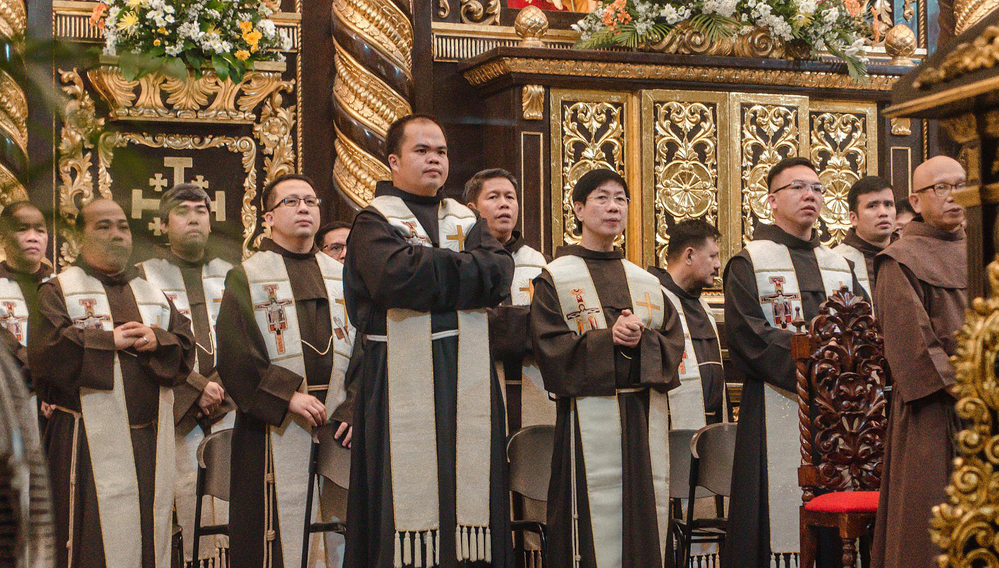

ABOUT THE CHURCH
Daraga Church is a historic landmark featuring unique Baroque architecture. Located atop a hill, it offers a commanding view of the surrounding landscape and Mayon Volcano. It remains a vital religious and cultural center for the Bicolano community.

CENTURIES OF HISTORY
Built in 1773 by Franciscan missionaries, the church was intended as a refuge for those displaced by Mayon's eruptions. Having survived centuries of natural disasters and wars, it is now officially recognized as a National Cultural Treasure of the Philippines.
FACTS
Historical and geographical data.
- Year Built: 1773
- Status: National Cultural Treasure
- Location: Santa Maria Hill, Daraga
- Style: Mexican Baroque
TRAVEL TIPS
Etiquette for visiting a sacred site.
- 👗 Attire: Please dress modestly (no short shorts/tank tops).
- 🤫 Silence: Keep noise levels low during visits.
- ☀️ Timing: Morning visits offer the best light for photos.
- ⛪ Respect: Be mindful of ongoing masses or services.
THINGS TO DO
Make the most of your cultural visit.
Architecture Study
Photography
Attend Mass
Hillside View
Prayer
Take a moment to look at the volcanic stone facade—it's carved from local rocks!